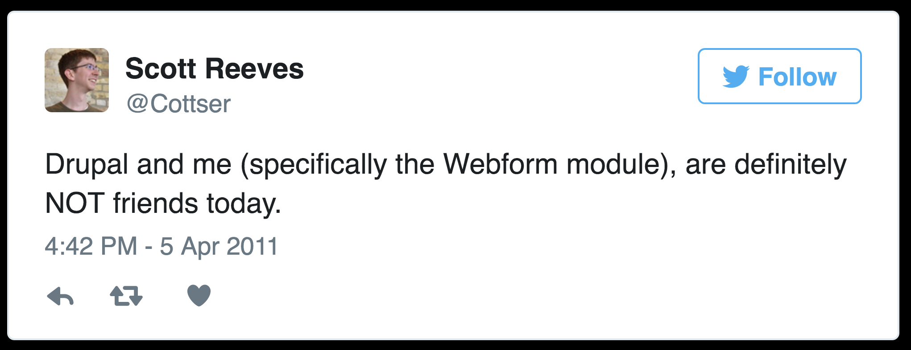
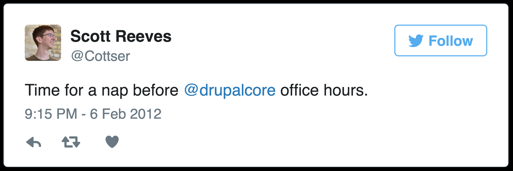
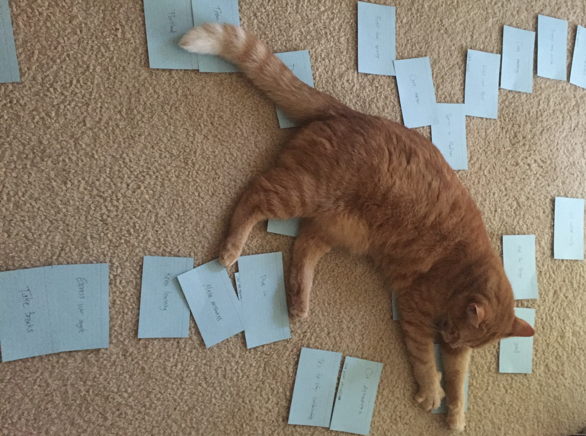
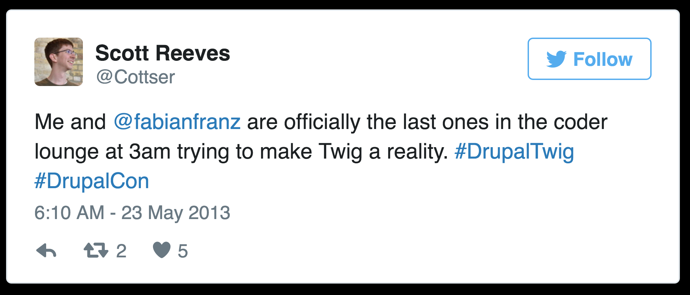

One Step at a Time
Turn on screen recording.
Lessons Learned from Drupal Newbie to Core Committer
Scott Reeves
Cottser
Drupal 8 theme system co-maintainer
Stable base theme maintainer
Provisional core committer for Drupal 8
Team Lead at Digital Echidna
What follows is my journey of the past 5 years and some things I've learned.
This is meant to apply to more than Drupal.
A side project you want to start, a new hobby, whatever.
Tweet questions: #HeyCottser
Nobody knows everything…
I don't have all the answers.
…but together we know a lot!
I give Cathy Theys (YesCT) credit for this.
This is a lesson I learned from the core mentoring program.
Let's rewind.
Y2K
Put my first site online in 2000, it was a Quake 1 fan site.
…looks best with a Cascading Style Sheet-capable browser, which is either Internet Explorer 3.0+ or Navigator/ Communicator 4.0+.
My first site had this message on it. Internet Explorer 3!
I went to college for Graphic Design.
Before Drupal
In the ~2 years before I started using Drupal I was building web applications using the CakePHP framework.
I contributed some typo fixes and did many documentation updates.
I worked on a local open data project built on CakePHP.
Early Drupal experiences
Started using Drupal 7 in its early days, 7.0. First site was a tiny 1-page site.

My early experiences weren't great. This tweet is mostly about the form API.
The theming experience frustrated me. PHP templates and theme functions.
Early contrib patches
Most of my early patches actually revolved around Webform, coincidentally or not.
Webform itself got a few typo type reports.
A Drupal 6 module called Webform Reports got a bunch of patches.
Core mentoring
Early 2012. Somehow I heard about core mentoring (then core office hours).
Core mentoring happens on IRC.
How many people know about IRC? (hands)
IRC is an old chat protocol. Rooms, private messaging, etc.
I would go to core office hours every Monday either 11pm-1am or midnight to 2am depending on DST.
I did this fairly consistently for a few months.

Eventually I asked my employer if I could attend the timeslot that was around lunchtime Wednesdays.
Special shout out to my mentor xjm (Jess).
Find support
If you can connect with like-minded folks about what you're doing I think it can be a big help.
Use Proper Name Case for core modules
One of the first core patches I worked on was literally just changing capitalization.
I learned about how the community works and about the process without writing code.
Start small
Whatever your version of fixing typos is, start there.
You can still have bigger goals.
I kept going to core mentoring and working on smaller issues in core.
Core mentor
Around this time I was asked to be a core mentor.
I mentored on IRC for a couple hours nearly every week for ~2 years.
Learned a lot from those that I mentored.
Sprint in Madison
July 2012. My first sprint and first sprint as a mentor.
Learned a lot that day.
Practice
One of the biggest things I learned during my time as a mentor was that learning the process was probably the biggest barrier for most people.
As with many things, practice is key.
Drupal Twig
January 2013, wanted to sink my teeth into something more than random core issues. I felt like I knew the process.
There were formal Drupal 8 initiatives, Twig was not one of them.
Based on my early experiences with Drupal 7 it was one I was passionate about (TX).
I was keeping an eye on Twig.
Find or make a fit
This might not apply to a solo project or hobby but if you're doing something more community-based…
Speaking in Drupal terms you might have to start your own initiative or join an underdog.
As I was searching for my fit some things happened that convinced me I had found it.
There needs to be some pick-up here, real soon, or we might need to have some very hard discussions come mid-Feb. :(
– Angie Byron (webchick)
This is part of a comment from webchick on the main Twig issue at the time.
I saw this comment and it really resonated with me.
A few days later Carl Wiedemann (c4rl) created a ton of issues to convert things to Twig.
I immediately followed all these issues.
Dive in
Something clicked and I saw an opportunity to help pick things up.
Fairly soon I found there were some blockers so I started working on those.
I got in touch with the Twig Team through IRC and they were very kind.
Find your mission passion
I felt great about the work I was doing at this time.
Pretty soon I was putting in enough hours to call Drupal Twig my second full time job.
It didn't take too long for this to feel unsustainable.
I wasn't eating properly, I wasn't exercising, I wasn't sleeping enough, the list goes on…
Try to stay sustainable
Avoid this if you can. Although I felt like I was doing the best work of my life I was overworking myself and setting myself up for burnout.
I think this type of pattern also shows my privilege and arguably a flaw of most open source communities.
The people that can spend the most time have the most impact for better or for worse.
Cut distractions
One thing I found helpful during this hectic time was cutting out things like Twitter, TV, etc.
I think this is perfectly healthy and I don't regret these decisions at all.
I don't feel as peachy about sacrificing my health and social life.

Cut Cat distractions
Regardless, remember to have some fun.
Local sprints
March 2013 organized the first Drupal core sprint in London for Drupal Sprint Weekend.
Sprints were held all over the world and this has happened every year since (we've participated in every DSW).
We've also held other sprints outside of DSW.
Get involved locally
Doing these local sprints and meetups was a great way to stay connected to the real world.
Theme system maintainer
Around this time a few of the people who were active in Twig were added as component maintainers.
I remember I was working on Twig things at home when I found out.
Make mistakes
One of the mistakes we made as the Twig team was that we tried to convert everything all at once.
We were in danger of missing our DrupalCon Portland deadline (late May 2013).
There were over 60 templates and over 150 theme functions at the time.
Finally someone had the brilliant idea of only converting the templates rather than both the templates and theme functions.
Doing only the templates was still a big task but was much more minimal and doable.
Portland
Portland was a whirlwind of activity.
One of the most notable things about Portland was that we trained a small army of frontend developers how to do PHP performance testing.
Every template we converted from PHP to Twig needed performance testing.
Front end respect!
This is where I take a moment to appreciate the fact that frontend developers don't have an easy job.
The frontend world changes so quickly and we were still able to get these folks to help with backend performance testing in Portland.

I worked hard in Portland, got a really bad DrupalFlu, but as you may know we got Twig into Drupal 8.
Express your angle
Whatever you're doing put your own twist on it.
For me it's been how I review patches (eye for detail).
Automating things (bulk issue creation).
And so on.
Theming experience
We of course kept working on theme function conversions and did manage to get them all 150+ converted for Drupal 8's release.
We also worked on some other things like making theme suggestions a bit easier to work with.
If you're interested in more stories from this time period you can come to my session at 4:04pm in room 404 (hopefully you can find it).
Deadlines can be motivating
Even after Portland we ran into other deadlines. Betas, RCs, etc.
Moving (or perceptively moving) deadlines can be de-motivating.
Take breaks
Take breaks from time to time, especially when things get overwhelming.
Over the years I've definitely taken breaks.
Provisional core committer
Earlier this year I became a provisional core committer, focusing on theming and frontend.
It's been a great experience so far.
One of the highlights was my live commit in New Orleans which was very long but well received.
I struggle with juggling core committer duties, other core duties, my life, and my dayjob.
Stay focused
Keep at it and be aware of distractions.
Keep moving
Don't be afraid to step down from existing things to make way for things that you're more passionate about.
Remember to be a human.
Thank you.
Q&A
#HeyCottser